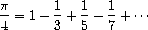
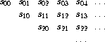
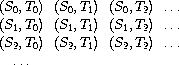

流式计算
Table of Contents
在用状态和赋值模拟的代码中，可以看到 赋值带来的复杂性 。实际上，这里的复杂性的根源是 现实世界中被模拟的现象 ：
- 用有 局部状态的计算对象 模拟 真实中的状态可能变化的对象
- 用 计算机里的系统随着时间的变化 模拟 现实世界中的变化
- 通过对 有局部状态的对象的赋值 ，实现 计算机系统里的状态变化
现在考虑另一种思路：把 一个随时间变化的量表示为一个随时间变化的函数 x(t) 。这样可得到两个层面的观察：
- 如果看 x 在一系列具体时刻的值，它是一个 随时间变化的变量
- 如果看 x 的整个历史，它就是一个 时间的函数，并没有变化
对于离散时间上的函数 x(t) ，由于是离散时间的函数，可以用无穷长的序列模拟。这种序列称为 流 。流被用来 模拟状态的变化 ， 模拟一个系统随时间变化的历史
流
为了做这种模拟，需要引进一种数据结构，也被称为 stream ：
- 不能直接用表结构 表示流，因为一般说流可能是 无穷的
- 下面采用 延时求值 技术，用流表示任意长的序列
流技术可用于模拟一些包含状态的系统，构造一些有趣模型：
不需要赋值和变动数据结构，因此可以避免赋值带来的问题
流不是万能灵药，使用上有本质性困难
延迟序列
如果用 序列 作为组合程序的标准接口，可以构造了许多有用的序列操作抽象，如 map , filter , accumulate 等。比如，用迭代风格计算一个区间中所有素数之和的过程：
(define (sum-primes a b) (define (iter count accum) (cond ((> count b) accum) ((prime? count) (iter (+ count 1) (+ count accum))) (else (iter (+ count 1) accum)))) (iter a 0))
用序列操作的组合写同样程序：
(define (sum-primes a b) (accumulate + 0 (filter prime? (enumerate-interval a b))))
虽然这些抽象用起来很漂亮，但是在得到好结果的同时可能付出 严重的效率代价 （空间和或时间），因为 每步操作都可能构造出很大的数据结构 ：
第一个程序在计算中 只维持部分积累和 ，而在第二个程序的计算中：
- enumerate-interval 构造出区间 [a,b] 中所有整数的表
- filter 基于产生过滤后的表并将其送给 accumulate
实际上两个表都可能很大：
清晰性和模块化的代价是效率和资源消耗
另一个极端的例子：求 10000 到 1000000 的区间里的第二个素数，显然效率是极其低效：
(car (cdr (filter prime? (enumerate-interval 10000 1000000))))
流是一种有趣想法，其特点：
- 支持序列操作同时又能避免用表表示序列的额外代价
- 程序像操作表一样工作，又有递增计算的高效率
流的基本思想：
做好一种安排，工作中只构造出序列的一部分。仅当程序需要访问序列的尚未构造出来的部分时才去构造它
程序可以认为整个序列都存在，就像是处理和使用完整的序列
从表面看 流 就像 表 :
- 构造函数： cons-stream
- 选择函数： stream-car 和 stream-cdr
- the-empty-stream : 生成一个特殊的空流，它不能是任何 cons-stream 产生的结果
- stream-null? ： 用来判断是否为空
相关操作满足：
(stream-car (cons-stream x y)) = x (stream-cdr (cons-stream x y)) = y
基于这些基本操作可定义各种序列操作：
(define (stream-ref s n) (if (= n 0) (stream-car s) (stream-ref (stream-cdr s) (- n 1)))) (define (stream-map proc s) (if (stream-null? s) the-empty-stream (cons-stream (proc (stream-car s)) (stream-map proc (stream-cdr s))))) (define (stream-for-each proc s) (if (stream-null? s) 'done (begin (proc (stream-car s)) (stream-for-each proc (stream-cdr s)))))
stream-for-each 可以用来检查流的每个元素：
(define (display-stream s) (stream-for-each display-line s)) (define (display-line x) (newline) (display x))
为了使流的 构造 和 使用 能自动而透明地交替进行，实现中需要适当安排：对其 cdr 部分的求值等到 实际做 stream-cdr 时 再做，而不是在求值 cons-stream 时做。作为数据抽象，流和常规表一样，不同点只是 元素的求值时间 ：
- 表的两个成分都在构造时求值
- 而流的 cdr 部分推迟到使用时才求值
delay形式
流的实现基于特殊形式 delay ：
求值(delay <e>) 时并不求值 <e>，而是返回一个延时对象
过程 force : 以 延时对象 为参数，执行对 <e> 的求值
(cons-stream <a> <b>) 等价于表达式 (cons <a> (delay <b>))
两个选择函数定义为：
define (stream-car stream) (car stream)) (define (stream-cdr stream) (force (cdr stream)))
- stream-car : 直接返回 流 的 car
- stream-cdr : 得到 流 的 cdr，然后求值这个延迟对象，再返回
流计算实例
为理解流计算，用流重写求第二个素数的例子，首先用cons-stream 构建 10000 ~ 1000000 的区间：
(define (stream-enumerate-interval low high) (if (> low high) the-empty-stream (cons-stream low (stream-enumerate-interval (+ low 1) high)))) ;; (stream-enumerate-interval 10000 1000000) ;; (cons-stream 10000 (stream-enumerate-interval 10001 1000000)) ;; (cons 10000 (delay (stream-enumerate-interval 10001 1000000))
可以看到 (stream-enumerate-interval 10000 1000000) 等价于 (cons 10000 (delay (stream-enumerate-interval 10001 1000000))
过滤 stream ：
(define (stream-filter pred stream) (cond ((stream-null? stream) the-empty-stream) ((pred (stream-car stream)) (cons-stream (stream-car stream) (stream-filter pred ; 这里并不求值，只是保存求值的表达式 (stream-cdr stream)))) (else (stream-filter pred (stream-cdr stream)))))
现在可以把求值第二个素数改写成：
(stream-car (stream-cdr (stream-filter prime? (stream-enumerate-interval 10000 1000000)))) ; => 10009
- 对 stream-enumerate-interval 的调用返回 (cons 10000 (delay (stream-enumerate-interval 10001 1000000)))：
;; (stream-enumerate-interval 10000 1000000) ;; (cons-stream 10000 (stream-enumerate-interval 10001 1000000)) ;; (cons 10000 (delay (stream-enumerate-interval 10001 1000000))
- stream-filter 检查 car 后丢掉 10000 并迫使流求出序列的下一元素：
(stream-filter prime? (cons 10000 (delay (stream-enumerate-interval 10001 1000000)))) (prime? (stream-car (cons 10000 (delay (stream-enumerate-interval 10001 1000000))))) (prime? 10000) ; => #f (stream-filter prime? (stream-cdr (stream-enumerate-interval 10001 1000000))) (stream-filter prime? (force (delay (stream-enumerate-interval 10001 1000000)))) (stream-filter prime? (stream-enumerate-interval 10001 1000000))
- 这样丢掉一个一个数直到 stream-filter 最终返回 (cons 10007 (delay (stream-filter prime? (stream-cdr (stream-enumerate-interval 10007 1000000)))))
(stream-filter prime? (stream-enumerate-interval 10007 1000000)) (prime? 10007) ; => #t (cons-stream 10007 (stream-filter prime? stream-cdr (stream-enumerate-interval 10007 1000000))) (cons 10007 (delay (stream-filter prime? (stream-cdr (stream-enumerate-interval 10007 1000000)))))
- 调用 stream-cdr 丢掉 10007, 继续求值：
(stream-cdr (cons 10007 (delay (stream-filter prime? (stream-cdr (stream-enumerate-interval 10007 1000000)))))) (force (delay (stream-filter prime? (stream-cdr (stream-enumerate-interval 10007 1000000))))) (stream-filter prime? (stream-cdr (stream-enumerate-interval 10007 1000000))) (stream-filter prime? (stream-enumerate-interval 10008 1000000)) .....
- 在得到第二个素数 10009 之后，调用 stream-car 结束计算：
(stream-filter prime? (stream-enumerate-interval 10009 1000000)) (prime 10009) ; => #t (cons 10009 (delay (stream-filter prime? (stream-cdr (stream-enumerate-interval 10009 1000000))))) (stream-car (cons 10009 (delay (stream-filter prime? (stream-cdr (stream-enumerate-interval 10009 1000000)))))) ; => 10009
注意：整个序列只展开了前面几项
延迟求值
流实现中采用了 延迟求值 （ lazy evaluation ），直到不得不做的时候再做。与之对应的是主动求值。 应用序 和 正则序 的概念也是上述两个概念的实例。延迟求值可看作“按需计算”，其中 流成员的计算只做到足够满足需要的那一步 为止
这种做法，解耦了计算过程中 事件的实际发生顺序 和 过程表面结构 之间的紧密对应关系，因此可能得到 模块化 和 效率 方面的双赢
基本操作实现
两个基本操作的实现很简单：
- (delay <exp>) ： (lambda () <exp>) 的语法糖
- 可以改造求值器来支持
- 也可以通过宏来实现
(define-syntax delay (syntax-rules () ((delay exp ...) (lambda () exp ...))))
- force ：简单调用由 delay 产生的无参过程
(define (force delayed-object) (delayed-object))
- cons-stream ： 也必须定义特殊形式，否则求值器会主动求值 cdr
(define-syntax cons-stream (syntax-rules () ((_ a b) (cons a (delay b)))))
记忆器
实际计算中可能会 多次强迫求值同一个延时对象 。每次都去重复求值会浪费很多资源（包括空间和时间）。解决办法是改造延时对象，让它在第一次求值时记录求出的值，再次求值时直接给出记录的值。这样的对象称为 带记忆的延时对象 ：
(define (memo-proc proc) (let ((already-run? false) (result false)) (lambda () (if (not already-run?) (begin (set! result (proc)) (set! already-run? true) result) result))))
这样 (delay <exp>) 就变成了 (memo-proc (lambda () <exp>))
(define-syntax delay (syntax-rules () ((delay exp ...) (memo-proc (lambda () exp ...)))))
force 的实现和原来一致
无穷流
流技术的实质是给使用者造成一种 假相 ：
- 以序列的一部分（已访问部分）扮演完整序列
- 利用这一技术来表示很长的序列，甚至 无穷长的序列
例如用流来表示所有大于 n 的整数：
(define (integers-starting-from n) (cons-stream n (integers-starting-from (+ n 1)))) (define integers (integers-starting-from 1)) ;; (stream-car integers) ; => 1 ;; (stream-car (stream-cdr integers)) ; => 2 ;; (stream-ref integers 100) ; => 101
integers 流的 car 是 1， cdr 是 生成从 2 开始的流的过程 ( promise )
由于任何一个程序都只可能用到有限个整数，它们不会发现这里实际上并没有无穷序列
基于 integers 定义许多其他的无穷流：
- 所有不能被 7 整除的整数流：
(define (divisible? x y) (= (remainder x y) 0)) (define no-sevens (stream-filter (lambda (x) (not (divisible? x 7))) integers)) ;; (stream-ref no-sevens 100) ; => 117
- 所有斐波纳契数的流：
(define (fibgen a b) (cons-stream a (fibgen b (+ a b)))) (define fib (fibgen 0 1)) ;; (stream-car fib) ; => 0 ;; (stream-car (stream-cdr fib)) ; => 1 ;; (stream-ref fib 2) ; => 1 ;; (stream-ref fib 20) ; => 6765
fibs 的 car 是 0 ，其 cdr 是求值 (fibgen 1 1) 的承诺 对 (fibgen 1 1) 求值得到其car 为 1，其 cdr 是求值 (fibgen 1 2) 的允诺 .......
- 构造所有素数的无穷序列：
(define (sieve stream) (cons-stream (stream-car stream) (sieve (stream-filter (lambda (x) (not (divisible? x (stream-car stream)))) (stream-cdr stream))))) (define primes (sieve (integers-starting-from 2))) ;; primes ;; => (2 . #<promise:stdin:130:21>) ;; (cons-stream ;; (stream-car (integers-starting-from 2)) ; 2 ;; (sieve (stream-filter ;; (lambda (x) ;; (not (divisible? x (stream-car (integers-starting-from 2)))))) ; 2 ;; (stream-cdr (integers-starting-from 2)))) ; (integers-starting-from 3) ;; (stream-cdr primes) ;; (sieve (stream-filter ;; (lambda (x) ;; (not (divisible? x 2)))) ;; (integers-starting-from 3)) ; 过滤掉所有能被2整除的整数 ;; (stream-ref primes 100) ; => 547
(stream-cdr primes) : stream-filter 从去掉 2 （当时的 car）的流中筛掉被 2 整除的数 把生成的流 （所有不能被2整除的整数） 送给 sieve函数 (stream-cdr (stream-cdr primes)) ： stream-filter 从去掉 3 （当时car）的流中筛掉所有 被 3 整除的数 把生成的流 （所有不能被2整除的整数中去掉所有不能被3整除的） 送给sieve函数 以此类推 ......
信号处理系统
流可看作 信号处理系统 。下图是 sieve 形成的信号处理系统图示：

- 虚线 表示传输的是 简单数据 ， 实线 表示传输的是 流
- 流的 car 部分用于 构造过滤器 ，且作为 结果流的 car
- 信号处理系统 sieve 内嵌一个同样的信号处理系统 sieve
这实际上是一个 无穷递归 定义的系统
用流运算定义流
元素均为1的无穷流：
(define ones (cons-stream 1 ones)) ;; ones ; => (1 . #<promise:stdin:130:21>) ;; (stream-car ones) ; => 1 ;; (stream-cdr ones) ; #0=(1 . #<promise!#0#>) ;; (stream-car (stream-cdr ones)) ; => 1 ;; (stream-cdr (stream-cdr ones)) ; => #0=(1 . #<promise!#0#>) ;; (stream-car (stream-cdr (stream-cdr ones))) ; => 1
通过流运算，可以方便地构造出各种流。如 加法运算 和 整数流 ：
(define (add-streams s1 s2) (stream-map + s1 s2)) (define integers (cons-stream 1 (add-streams ones integers))) ;; integers ; => (1 . #<promise:stdin:130:21>) ;; (stream-car integers) ; => 1 ;; (stream-cdr integers) ; => (2 . #<promise:stdin:130:21>) ;; (stream-car (stream-cdr integers)) ; => 2 ;; (stream-cdr (stream-cdr integers)) ; => (3 . #<promise:stdin:130:21>) ;; (stream-car (stream-cdr (stream-cdr integers))) ; => 3
缩放流中的各个数值：
(define (scale-stream stream factor) (stream-map (lambda (x) (* x factor)) stream)) (define double (scale-stream integers 2)) ;; (stream-car double) ; => 2 ;; (stream-ref double 10) ; => 22
也可以这样来定义斐波纳契数的流：
(define fibs (cons-stream 0 (cons-stream 1 (add-streams (stream-cdr fibs) fibs)))) ;; fibs ; => (0 . #<promise:stdin:130:21>) ;; (stream-car fibs) ; => 0 ;; (stream-cdr fibs) ; => (1 . #<promise:stdin:130:21>) ;; (stream-car (stream-cdr fibs)) ; => 1 ;; (stream-cdr (stream-cdr fibs)) ; => (1 . #<promise:stdin:130:21>) ;; (stream-cdr (stream-cdr (stream-cdr fibs))) ; => (2 . #<promise:stdin:130:21>) ;; (stream-cdr (stream-cdr (stream-cdr (stream-cdr fibs)))) ; => (3 . #<promise:stdin:130:21>) ;; (stream-cdr (stream-cdr (stream-cdr (stream-cdr (stream-cdr fibs))))) ; => (5 . #<promise:stdin:130:21>) ;; ...... ;; (stream-ref fibs 20) ; => 6765
从斐波纳契序列的前两个数出发求序列 fibs 和 (stream-cdr fibs) 的逐项和。构造出的部分序列再用于随后的构造
1 1 2 3 5 8 13 21 ... = (stream-cdr fibs) 0 1 1 2 3 5 8 13 ... = fibs 0 1 1 2 3 5 8 13 21 34 ... = fibs
素数流也可以这样来定义：
(define (square x) (* x x)) (define (prime? n) (define (iter ps) (cond ((> (square (stream-car ps)) n) true) ((divisible? n (stream-car ps)) false) (else (iter (stream-cdr ps))))) (iter primes)) (define primes (cons-stream 2 (stream-filter prime? (integers-starting-from 3)))) ;; (stream-car primes) ; => 2 ;; (stream-cdr primes) ; => (3 . #<promise:stdin:130:21>) ;; (stream-car (stream-cdr primes)) ; => 3 ;; (stream-cdr (stream-cdr primes)) ; => (5 . #<promise:stdin:130:21>) ;; (stream-car (stream-cdr (stream-cdr primes))) ; => 5 ;; ...... ;; (stream-ref primes 100) ; => 547
- prime? : 用来 prime流 来判断一个整数是否为素数
- primes : 用 prime? 做流的过滤，删除不是素数的元素
primes 和 prime? 相互递归引用
应用
基于延时求值的流也是很强大的模拟工具，可以在许多问题上 代替局部状态和赋值 ，与此同时 避免引入状态和赋值 带来的麻烦。在模拟实际系统时采用流技术，所支持的 模块划分 方式和基于赋值的 局部状态 的方式不同：
- 可以把 整个时间序列 或 信号序列 （而不是各时刻的值）作为关注的目标，这样做更 容易组合来自不同时刻的状态 成分
迭代
迭代 就是 不断更新一些状态变量 ，例如，求平方根过程中生成一系列逐步改善的猜测值：
(define (average x y) (/ (+ x y) 2)) (define (sqrt-improve guess x) (average guess (/ x guess)))
换种方式，可以生成这种猜测值的无穷序列：
(define (sqrt-stream x) (define guesses (cons-stream 1.0 (stream-map (lambda (guess) (sqrt-improve guess x)) guesses))) guesses) ;; (define 2-root-stream (sqrt-stream 2)) ;; (stream-car 2-root-stream) ; => 1.0 ;; (stream-ref 2-root-stream 1) ; => 1.5 ;; (stream-ref 2-root-stream 2) ; => 1.4166666666666665 ;; (stream-ref 2-root-stream 3) ; =>1.4142156862745097 ;; (stream-ref 2-root-stream 4) ; => 1.4142135623746899 ;; (stream-ref 2-root-stream 5) ; => 1.414213562373095 ;; (stream-ref 2-root-stream 6) ; => 1.414213562373095
可以基于 sqrt-stream 定义一个过程，让它不断生成猜测值，直到得到足够好的答案为止
基于交错级数_ 生成 π 的近似值的过程：

partial-sums ：求流的前缀段之和的流：
(define (partial-sums s) (add-streams s (cons-stream 0 (partial-sums s)))) ;; (stream-car (partial-sums integers)) ; => 1 ;; (stream-ref (partial-sums integers) 4) ; => 15
pi-stream ：π 的级数流
(define (pi-summands n) (cons-stream (/ 1.0 n) (stream-map - (pi-summands (+ n 2))))) (define pi-stream (scale-stream (partial-sums (pi-summands 1)) 4))
(stream-car pi-stream) ; => 4.0 (stream-ref pi-stream 1) ; => 2.666666666666667 (stream-ref pi-stream 2) ; => 3.466666666666667 (stream-ref pi-stream 3) ; => 2.8952380952380956 (stream-ref pi-stream 4) ; => 3.3396825396825403 (stream-ref pi-stream 5) ; => 2.9760461760461765 (stream-ref pi-stream 6) ; =>3.2837384837384844 (stream-ref pi-stream 7) ; => 3.017071817071818 这个流确实能收敛到 π ，但收敛太慢
加速收敛
欧拉提出了一种加速技术，特别适合用于交错级数。对于项为 Sn 的级数，加速序列的项是：

(define (euler-transform s) (let ((s0 (stream-ref s 0)) ; Sn-1 (s1 (stream-ref s 1)) ; Sn (s2 (stream-ref s 2))) ; Sn+1 (cons-stream (- s2 (/ (square (- s2 s1)) (+ s0 (* -2 s1) s2))) (euler-transform (stream-cdr s))))) (define euler-transform-pi-stream (euler-transform pi-stream))
(stream-car euler-transform-pi-stream) ; => 3.166666666666667 (stream-ref euler-transform-pi-stream 1) ; => 3.1333333333333337 (stream-ref euler-transform-pi-stream 2) ; => 3.1452380952380956 (stream-ref euler-transform-pi-stream 3) ; => 3.13968253968254 (stream-ref euler-transform-pi-stream 4) ; => 3.1427128427128435 (stream-ref euler-transform-pi-stream 5) ; => 3.1408813408813416 (stream-ref euler-transform-pi-stream 6) ; => 3.142071817071818 (stream-ref euler-transform-pi-stream 7) ; => 3.1412548236077655
甚至可以递归地加速下去，得到一个流的流 （下面称为表列），其中每个流是前一个流的加速结果：

(define (make-tableau transform s) (cons-stream s (make-tableau transform (transform s))))
取出表列中每个序列的第一项，就得到了所需的序列：
(define (accelerated-sequence transform s) (stream-map stream-car (make-tableau transform s)))
加速实验：
(define accelerated-pi-stream (accelerated-sequence euler-transform pi-stream))
(stream-car accelerated-pi-stream) ; => 4.0 (stream-ref accelerated-pi-stream 1) ; => 3.166666666666667 (stream-ref accelerated-pi-stream 2) ; => 3.142105263157895 (stream-ref accelerated-pi-stream 3) ; => 3.141599357319005 (stream-ref accelerated-pi-stream 4) ; => 3.1415927140337785 (stream-ref accelerated-pi-stream 5) ; => 3.1415926539752927 (stream-ref accelerated-pi-stream 6) ; => 3.1415926535911765 (stream-ref accelerated-pi-stream 7) ; => 3.141592653589778 虽然不用流模型也能实现这种加速，但在这里整个的流可以像序列一样使用，描述这种加速技术特别方便
序对的无穷流
可以用序列把常规程序里用嵌套循环处理的问题表示为序列操作。该技术可推广到无穷流，写出一些不容易用循环表示的程序（直接做时，需要对无穷集合做循环）
生成所有满足条件的 整数序对 (i,j) ，其中 i <= j 且 i+j 是素数 ， 以前的实现是：
(define (prime-sum-pairs n) (map make-pair-sum (filter prime-sum? (flatmap (lambda (i) (map (lambda (j) (list i j)) (enumerate-interval 1 (- i 1)))) (enumerate-interval 1 n))))) ;; 生成所有序对的组合
若 int-pairs 是所有满足 i <= j 的序对 (i,j) 的流，立刻可得
(stream-filter (lambda (pair) (prime? (+ (car pair) (cadr pair)))) int-pairs)
考虑 int-pairs 的生成。一般而言，假定有流 S = {Si} 和 T = {Tj} ，从它们可以得到无穷阵列：

假设S 和 T 都是 整数流，实际上所有对角线上半部分的集合就是想要的 int-pairs

这一无穷流为 (pairs S T) ：

它由三个部分构成：
- (S0,T0) 序对
- 第一行 的 其他序对 ： (stream-map (lambda (x) (list (stream-car s) x)) (stream-cdr t))
- 其他序对 ：由 (stream-cdr S) 和 (stream-cdr T) 递归构造的序对
因此所需的序对流很简单：
(define (pairs s t) (cons-stream (list (stream-car s) (stream-car t)) (<combine-in-some-way> (stream-map (lambda (x) (list (stream-car s) x)) (stream-cdr t)) (pairs (stream-cdr s) (stream-cdr t)))))
最简单的想法是模仿表的组合操作 append ：
(define (stream-append s1 s2) (if (stream-null? s1) s2 (cons-stream (stream-car s1) (stream-append (stream-cdr s1) s2))))
这样做不行！因为第一个流无穷长， (stream-null? s1) 事实上永远为 false ，所以一直不会有机会出现 s2
要考虑更巧妙的组合方法，如 交错 组合：
(define (interleave s1 s2) (if (stream-null? s1) s2 (cons-stream (stream-car s1) (interleave s2 (stream-cdr s1))))) ;; 交错执行 s1, s2 流的 stream-car 和 stream-cdr
最终得到生成所需的流的过程：
(define (pairs s t) (cons-stream (list (stream-car s) (stream-car t)) (interleave (stream-map (lambda (x) (list (stream-car s) x)) (stream-cdr t)) (pairs (stream-cdr s) (stream-cdr t)))))
实现 prime-sum-pairs-stream ：
(define int-pairs (pairs integers integers)) (define sum-prime-pair-stream (stream-filter (lambda (pair) (prime? (+ (car pair) (cadr pair)))) int-pairs)) ;; (stream-car sum-prime-pair-stream) ; => (1 1) ;; (stream-ref sum-prime-pair-stream 1) ; => (1 2) ;; (stream-ref sum-prime-pair-stream 2) ; => (2 3) ;; (stream-ref sum-prime-pair-stream 3) ; => (1 4) ;; .... ;; (stream-ref sum-prime-pair-stream 10) ; => (1 16)
交错是研究并发系统行为的一种重要工具，这里用的交错是确定性的交错（一边一个）
在计算机科学技术的研究和应用中，也有一些时候需要考虑非确定性的交错
正则序求值器
积分器
可以用流建模 信号处理过程 ，用流的 元素 表示一个 信号在顺序的一系列时间点上的值
考虑一个例子：积分器（或称求和器）。对输入流 x= (xi)，初始值 C 和一个小增量dt，它累积和Si并返回 S= (Si)：

integral流 可以用类似于 整数流 的方式来定义：
;;; integrand： 被积分函数 ;;; initial-value： 初始值 ;;; dt：时间增量 ;;; 输入流 integrand 经 dt 缩放送入加法器， 加法器输出反馈回来 送入同一个加法器，形成一个反馈循环 (define (integral integrand initial-value dt) (define int (cons-stream initial-value (add-streams (scale-stream integrand dt) int))) int)
用信号处理模型来表示：

输入流 integrand 经 dt 缩放送入加法器， 加法器输出反馈回来 送入同一个加法器，形成一个反馈循环
求解微分方程
上面 integral 可以被定义，是因为在 cons-stream 里实际上有 delay ，其第二个参数并不立即求值。如果没有这种 delay 机制，那么就需要用先构造出 cons-stream 的参数，而后用它去定义 int
没有 delay 无法构造带有反馈循环的系统，因为构造 int时用到它自身
构造带有反馈循环的处理系统时，其中反馈流的定义都是递归的
必须有 delay，才能用还没有构造好的流去定义它自身
对更复杂的情况，仅有隐藏在 cons-stream 里的 delay 可能不够用，可能需要 显式地明确使用 delay
假定需要定义一个求解微分方程 dy / dx = f(x) 的信号处理系统
其中 f 是给定的函数

模拟计算机用这样的电路求解这种微分方程，这个系统的结构：
- 用一个部件实现 应用 f 的映射
- 处理中存在一个 反馈循环
- 循环中还包括一个 积分器
如果用下面过程模拟这个信号处理系统：
(define (solve f y0 dt) (define y (integral dy y0 dt)) (define dy (stream-map f y)) y)
注意：上面过程无法工作，因为 定义y 用到 dy ，而当时 dy 还没有定义
必须在还不知道 dy 的情况下开始生成 y integral 要在知道流的部分信息（第一个元素）的情况下开始使用
- 对 integral，流 int 的第一个元素由 initial-value(y0) 给出
- 流 y 的第一个元素是参数 y0_，这时候还不需要获得 _dy
有了 y 的第一个元素就可以开始构造 dy 了后就可以用 dy的元素 去构造流 y 的元素
为此需要修改 integral，让它把被 积分流看作延时参数 。integral 里需要用 force 去强迫对积分对象的求值
(define (integral delayed-integrand initial-value dt) (define int (cons-stream initial-value (let ((integrand (force delayed-integrand))) ;; 手动求值积分对象 (add-streams (scale-stream integrand dt) int)))) int)
在 solve 过程中定义 y 的时候，把 dy 作为延时求值参数 传递
(define (solve f y0 dt) (define y (integral (delay dy) y0 dt)) ;; 延迟求值 dy (define dy (stream-map f y)) y)
调用这个 integral 的过程时需要 delay 被积参数
例如，假设 dy/dt = y ，初始条件为 y(0) = 1 ，求 t = 1 时候 y 的值 ：
;; dy / dt = y , y(0) = 1 ;; y = e ^ t ;; y(1000) = e ^ (0.0001 * 1000) = e (stream-ref (solve (lambda (y) y) 1 0.001) 1000) ; => 2.716923932235896
正则序
显式使用 delay 和 force 扩大了流技术的应用范围，也使工作变复杂：
- 新的 integral 能模拟更多信号处理系统
- 但要求用延时流作为被积对象，使用时也必须显式描述那些参数需要延时求值
这里为解决同一个问题定义了两个 integral：
一个采用常规参数，处理简单的规范的情况
一个采用延时参数，可以适应更多问题，使用比较麻烦
要避免写两个过程的一个办法是 让所有参数都是延时的 。例如换一种求值模型，其中所有的参数都不求值，也就是说，采用 正则序求值 。正则序的优缺点：
- 优点：可以得到统一的参数使用方式，很适合流处理的需要
- 缺点：它与局部状态的变动不兼容
- 正则序将参数求值延迟到使用时， 延时期间发生的赋值可能改变相关对象状态 ，影响参数的值，这一情况可能使程序的 语义变得很不清晰
函数式编程和对象模块化
- 引进 赋值 得到了新的模块化手段，可以把系统状态的一些部分封装起来，隐藏到局部变量里
- 流模型 可以提供类似的模块化方式,而且 不需要赋值
用 蒙特卡罗模拟 作为例子，这里最关键的模块化需要是： 隐藏随机数生成器内部状态，使之与使用随机数的程序隔离 。使用基于 赋值 的技术：利用过程 rand-update 实现一个随机数生成器，在这个过程内部封装一个局部状态
(define rand (let ((x random-init)) (lambda () (set! x (rand-update x)) x)))
用 流技术 可以实现类似的模块化，描述中只看到 一个随机数的流 :
(define random-numbers (cons-stream random-init (stream-map rand-update random-numbers))) ;; (stream-car random-numbers) ; => 7 ;; (rand-update 7) ; => 88 ;; (stream-ref random-numbers 1) ; => 88 ;; (rand-update 88) ; => 116 ;; (stream-ref random-numbers 2) ; => 116
对一个流的相邻的元素进行运算：
;; 对一个流的相邻的元素进行运算 ;; f: 运算函数 ;; s: 流 (define (map-successive-pairs f s) (cons-stream (f (stream-car s) (stream-car (stream-cdr s))) (map-successive-pairs f (stream-cdr (stream-cdr s))))) ;; (define successive-sum-stream (map-successive-pairs + integers)) ;; (stream-car successive-sum-stream) ; => 1 + 2 = 3 ;; (stream-ref successive-sum-stream 1) ; => 3 + 4 = 7 ;; (stream-ref successive-sum-stream 2) ; => 5 + 6 = 11
基于 random-numbers 做蒙特卡罗模拟的数对流 cecaro-stream ：这是个布尔值流，流中真假值表示实验的成功与失败
(define cesaro-stream (map-successive-pairs (lambda (r1 r2) (= (gcd r1 r2) 1)) random-numbers)) ;; (stream-car cesaro-stream) ; => #t ;; (= (gcd 7 88) 1) ; => #t ;; (stream-ref cesaro-stream 1) ; => #f ;; (= (gcd 116 110) 1) ; => #f
做这个实验，只需把 cecaro-stream 导入过程 monte-carlo ，该过程生成顺序的一系列 π 估计值的流：
(define (monte-carlo experiment-stream passed failed) (define (next passed failed) ;; 每次都基于已经求值的结果，算出一个新的估计值 (cons-stream (/ passed (+ passed failed)) ;; 计算新的估计值 (monte-carlo (stream-cdr experiment-stream) passed failed))) ;; 延迟计算，只是保存操作 (if (stream-car experiment-stream) (next (+ passed 1) failed) (next passed (+ failed 1))))
两个随机数互素的概率是 6/(π ^ 2)，由此可以计算：
(define monte-carlo-stream (stream-map (lambda (p) (sqrt (/ 6 p))) (monte-carlo cesaro-stream 0 0))) ;; (stream-car monte-carlo-stream) ; => 2.449489742783178 ;; (stream-ref monte-carlo-stream 1) ; => 3.4641016151377544 ;; (stream-ref monte-carlo-stream 2) ; => 3 ;; (stream-ref monte-carlo-stream 3) ; => 2.8284271247461903 ;; (stream-ref monte-carlo-stream 4) ; => 3.1622776601683795 ;; (stream-ref monte-carlo-stream 5) ; => 3 ;; (stream-ref monte-carlo-stream 100) ; => 3.232379288089343
这个程序同样模块结构良好，概念清晰 可以支持任何蒙特卡罗试验，换一个试验，只需要定义好相应的流和可能的结果处理 并且这个程序里没有状态，也没有赋值
函数式编程的时间观点
换个角度去看时间：
- 赋值 是一种模块化手段，基于它们模拟复杂系统的方式是：构造有局部状态的对象，用 赋值改变状态 ，用这种对象在执行中的变化去 模拟现实世界中各种对象的行为
- 流 也可以做类似的模拟，其中模拟的是 变化的量随时间的变化史 。通过直接表现时间， 解耦了模型中的事件和被模拟世界的时间的联系。delay 使事件的发生顺序与被模拟世界里的时间脱钩
考虑取款处理器的例子：
(define (make-simplified-withdraw balance) (lambda (amount) (set! balance (- balance amount)) balance))
这样生成的处理器实例有局部状态，每次调用减少 balance 值 一系列调用就是送给它一个提款额序列，解释器显示一个余额序列
如果用流来模拟，以初始余额和提款流作为参数，生成余额流：
(define (stream-withdraw balance amount-stream) (cons-stream balance (stream-withdraw (- balance (stream-car amount-stream)) (stream-cdr amount-stream)))) ;; (define balance-stream (stream-withdraw 100 ones)) ;; 时刻0，余额是100块 ;; (stream-car balance-stream) ;; 时刻1， 取1块，余额是99块 ;; (stream-ref amount-stream-withdrew 1) ; => 99 ;; 时刻2，再取1块，余额是98块 ;; (stream-ref amount-stream-withdrew 2) ; => 98 ;; ... ;; (stream-ref amount-stream-withdrew 100) ; => 0
这个过程是一个良好定义的数学函数，其输出完全由输入确定 从输入提款额并观看余额的角度，这个流的行为就像前面的对象 但这里没有内部状态和变动，因此没有赋值带来的各种麻烦
这里好像有悖论：stream-withdraw 是一个数学函数，其行为不变，而用户却像是在与一个状态不断变化的系统打交道
这是 用户行为的时态特性赋予系统时态性质 。如果用户只看到交互流(amount-stream)和余额流(balance-stream)，而不看具体交互，他们就看不到系统的状态特征
局部状态
一个复杂的系统有许多部分：
- 从一个部分可以看到其余部分都在随时间变化,具有变化的状态
- 如果要写程序去模拟真实世界的这种分解，最自然的方式就是定义一批有状态的对象，让它们根据需要变化（对象和状态途径）
- 这是用 计算机执行的时间去模拟真实世界的时间 ，把真实世界的对象 塞进 计算机
有局部状态的对象很有用，也很直观，比较符合人对所处并与之交流的世界的看法（看成一些不断变化的对象） 但是这种模型本质地依赖于事件发生的顺序，带来并发同步等很麻烦的问题
流模拟
纯函数式语言里没有赋值和变动对象，所有过程实现的都是定义良好的数学函数，其行为永远不变，因此特别适合描述 并发系统 。但是特别麻烦的情况是 设计交互式程序 ，模拟独立对象之间的交互。考虑共享账户问题。在常见系统里 Peter 和 Paul 的共享账户是用状态和赋值模拟的，他们的请求被送到这个计算对象：
- 按照流的观点，这里没有变化的对象
要想模拟 Peter 和 Paul 的共享账户,就需要把两人的 交易请求流合并 后送给表示他们的共享账户的过程：

这里的归并有很难处理的问题：怎么反映真实世界里两人的行为效果 两人碰头时应看到以前所有交易的效果 不能用交替（两人交替操作不合理） 要解决这个问题，实际上必须引入显式同步（这是一直希望避免）
总结
可以用两种不同的思路来模拟不断变化的世界：
- 用一组相互分离、受时间约束、有内部状态且相互交流的对象
- 用一个没有时间也没有状态的统一体
两种途径各有优势和劣势，但都不能完全令人满意